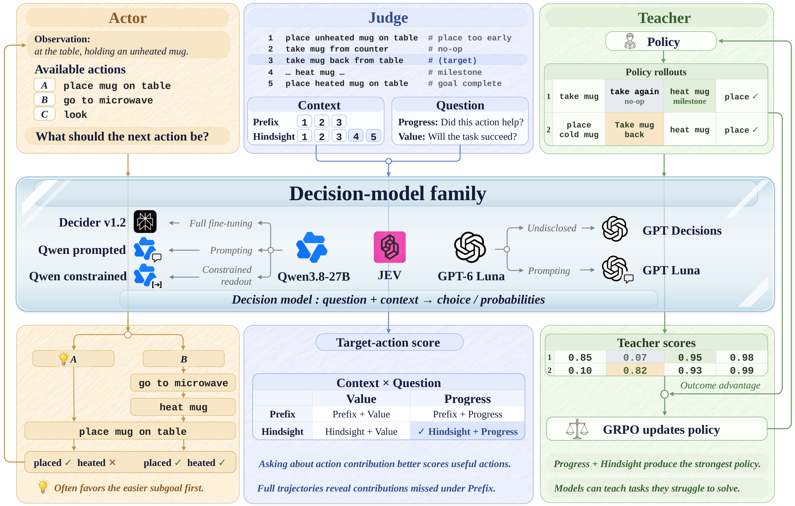

The story in one line
A decision model that acts poorly can still teach well.
Judging an action after the episode ends reveals the consequences that acting must anticipate. We follow JEV through all three roles on the same ALFWorld tasks with dependency (clean, heat, or cool an object before placing it).
-
Actor
fails to act
14.7%
success on tasks with dependency when JEV chooses the actions itself
-
Judge
judges well, if asked right
Milestone Other No-op Value 0.632 0.604 0.577 Progress 0.659 0.440 0.298Only the Progress question separates milestones from no-ops.
-
Teacher
teaches what it can’t do
86.8%
success on the same tasks for a 1.5B policy trained with JEV’s scores
Abstract
Decision models answer a question with a typed output, such as a choice among options with a probability for each, so one model can choose an agent's actions, judge actions already taken, or score every action to teach a policy with reinforcement learning. They have been evaluated mainly as actors, where they often fail. We study three decision models and three general LLMs given the same questions in all three roles on ALFWorld and WebShop. Our results suggest that a decision model that acts poorly can still teach well, because judging an action after the episode ends reveals the consequences that acting must anticipate. As actors, all six models are pulled away from a subgoal that must come first by an easier one. As judges that see the whole trajectory and are asked whether each action helped, the same models credit the actions that repair such mistakes, whereas asking whether the task will succeed gives every action nearly the same score. Used this way as a teacher, JEV raises a Qwen2.5-1.5B-Instruct policy over GRPO from 72.8% to 82.9% success on ALFWorld and from 56.8% to 71.4% on WebShop, with the largest gains on the tasks that JEV rarely completes as an actor.
